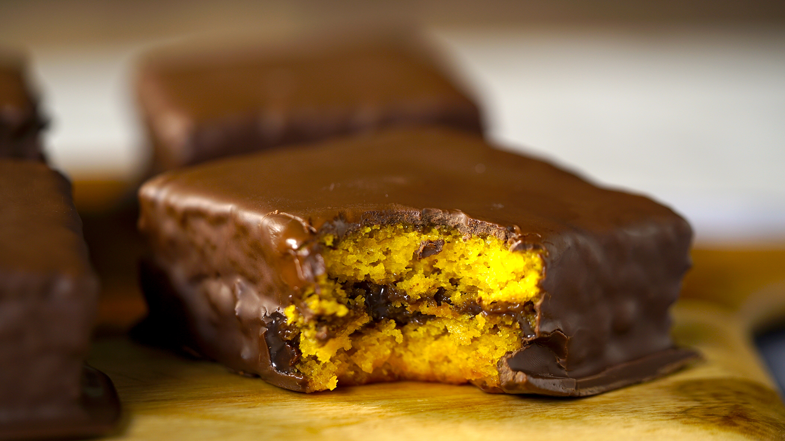

Bolo cenoura
 Mussum Ipsum, cacilds vidis litro abertis. Quem manda na minha terra sou euzis! Viva Forevis aptent taciti sociosqu ad litora torquent. Interagi no mé, cursus quis, vehicula ac nisi. In elementis mé pra quem é amistosis quis leo.
Dificuldade: Facil | 68 visitas | 5 Estrelas | Porção: 8 pessoas
Categorias
- Bolos
- Pratos Salgados
- café da manhã
- Pratos doces
Ultimas Adicionadas
- Receita 1
- Receita 2
- Receita 3
- Receita 4